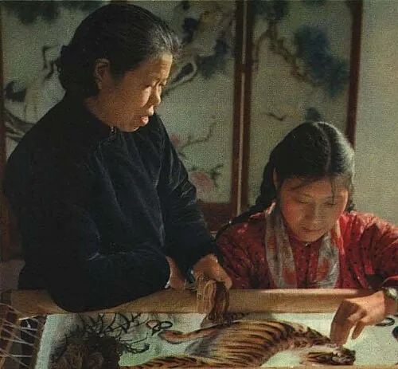

太守寻非遗 · 寻访档案
传承人
按寻访编号排列，一位传承人一份档案。第一辑寻访进行中，传承人档案将在本人确认后发布。
寻访编号
2026 · 第一辑
姓名、原话、照片经本人确认后才发布。级别以文化和旅游主管部门公布的名单为准。
太守寻非遗 · 寻访档案
按寻访编号排列，一位传承人一份档案。第一辑寻访进行中，传承人档案将在本人确认后发布。
2026 · 第一辑
姓名、原话、照片经本人确认后才发布。级别以文化和旅游主管部门公布的名单为准。
国家级非物质文化遗产代表性项目 1557 项，数据来自中国非物质文化遗产网 · 查名录 →




配图均为公有领域或 CC0 授权，作者和出处见名录页每一项。